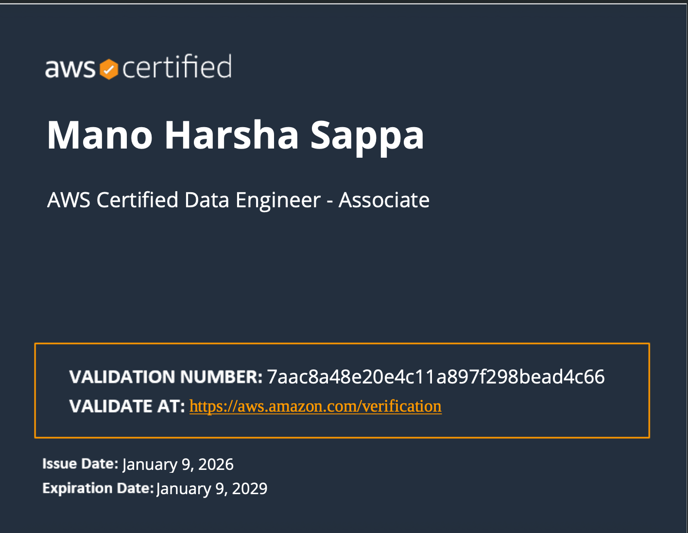
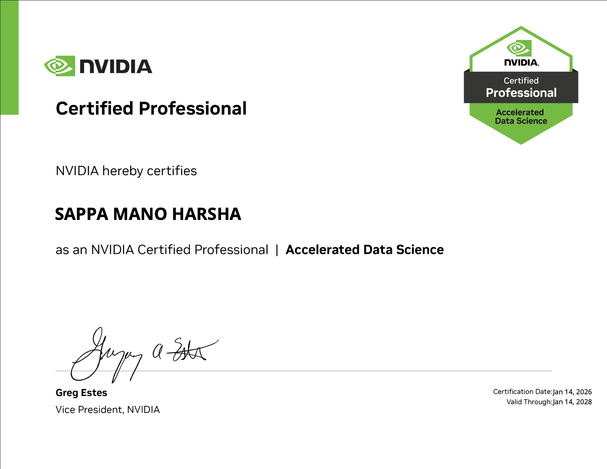
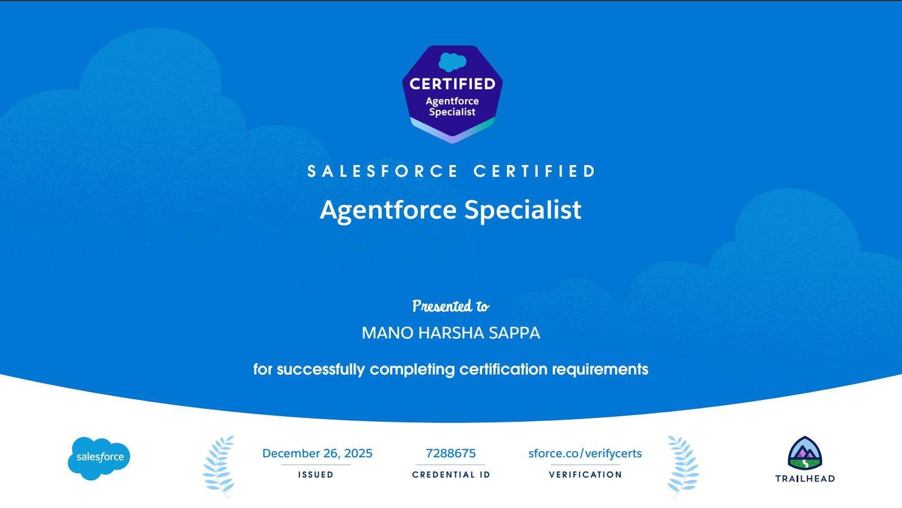

Healthcare Data Platform
Built scalable ELT pipelines using Snowflake, dbt, and AWS S3 to process healthcare claims data, improving availability and reducing manual preparation.
Analytics Engineer
Specialized in Snowflake • dbt • SQL • Data Modeling
Fairfax, VA · United States
Healthcare & Financial Analytics
Analytics Engineer with 5+ years of experience designing scalable data pipelines, dimensional models, and analytics systems across healthcare and financial domains. Specialized in SQL, Snowflake, dbt, Python, and cloud platforms to build reliable, production-ready data solutions that drive business decisions.
Hands-on experience with these companies.

Featured Experience
Real-world systems built across healthcare and financial domains
Built scalable ELT pipelines using Snowflake, dbt, and AWS S3 to process healthcare claims data, improving availability and reducing manual preparation.
Developed scalable SQL pipelines, dimensional models, and BI dashboards improving reporting efficiency and reducing manual effort.

Designed SQL-based reporting pipelines and dashboards improving accuracy and enabling data-driven decisions.
Organized by capability area for quick recruiter review across AI, data engineering, and analytics delivery.
Predictive & AI Systems
Built a retrieval-augmented QA chatbot for technical inspection workflows using LLMs, FAISS, Whisper, and LangChain.
Applied PySpark and ensemble ML models to analyze deterioration patterns and maintenance risk for infrastructure assets.
Predicted engagement metrics using regression modeling, feature engineering, exploratory analysis, and hyperparameter tuning.
Used regression, clustering, and PCA to identify the primary drivers of EV adoption across U.S. regions.
Implemented unsupervised anomaly detection on imbalanced transaction data using Keras and TensorFlow autoencoders.
Pipelines & Platforms
Built a hybrid Azure-AWS analytics platform using Databricks, ADF, Synapse, and Terraform for KPI-driven workforce analytics.
Designed a streaming and batch data pipeline integrating Azure IoT Hub, Stream Analytics, Databricks, and PySpark MLlib.
Built an end-to-end healthcare analytics system using Snowflake, dbt, Python, and Power BI to analyze claims patterns and improve operational insights.
Created a relational data system with SQL reporting to track circulation, usage behavior, and library operations.
Analytics & BI
Created analytics and visualizations using Python, R, and SQL to evaluate city-wide recycling performance.
Redesigned misleading charts into clearer decision-support visuals that reduce bias and improve analytical interpretation.
Analyzed collision patterns to identify high-risk zones and the factors most associated with road safety outcomes.
Assessed district-level waste data to surface recycling patterns and support sustainable resource management decisions.
Delivering scalable data solutions across healthcare and financial analytics


0+
Years Experience
Building expertise across Data Engineering, Analytics, and Cloud
Wipro
1+ Years Experience
Built strong foundation in SQL, reporting, and data validation
Accenture
2+ Years Experience
Scaled analytics systems, data modeling, and BI solutions
Cigna 5+
Present
Working on healthcare data pipelines & cloud analytics
At Cigna, I worked on building scalable data pipelines to process large-scale healthcare claims data, where the biggest challenge was ensuring data availability while reducing manual preparation efforts across analytics teams. I designed and implemented ELT pipelines using Snowflake, dbt, and AWS S3, which significantly improved data accessibility and reduced operational overhead. To enhance performance, I restructured dimensional data models for financial and claims reporting, enabling faster query execution and more efficient analytics workflows. I also introduced data validation and monitoring mechanisms using Python, which improved data quality and minimized reporting errors. By collaborating closely with engineering and business teams, I ensured the delivery of reliable, analytics-ready datasets that supported better operational and financial decision-making.
At Accenture, I focused on developing scalable analytics solutions by integrating multiple data sources into structured SQL pipelines. One of the key challenges was reducing manual reporting effort while maintaining consistent and reliable metrics across business teams. I designed dimensional data models and curated data layers that streamlined reporting workflows and improved efficiency. Additionally, I built interactive dashboards using Power BI and Tableau, enabling stakeholders to track performance and make data-driven decisions. By automating reporting processes with Python and SQL, I significantly reduced turnaround time and improved consistency. My work also involved collaborating with cross-functional teams to translate business requirements into scalable analytics solutions.
At Wipro, I worked on improving reporting systems by developing SQL-based data extraction and transformation processes. The primary challenge was transitioning from manual reporting to more efficient, automated workflows. I built dashboards using Power BI that provided visibility into operational and financial metrics, helping stakeholders make informed decisions. I also performed data cleaning and validation to ensure accuracy and reliability across datasets. Through exploratory data analysis, I identified key trends and provided actionable insights that supported business performance improvements. This experience helped me build a strong foundation in data analytics, reporting, and business intelligence systems.
I hold professional certifications across major platforms including Microsoft Azure, AWS, NVIDIA for accelerated data science, and Salesforce Agentforce. These certifications validate my expertise in cloud data engineering, AI analytics, and building secure, scalable solutions in multi-cloud environments.
Total Certifications: 8 • Focus Areas: Cloud · Data Analytics · DevOps · Programming
Microsoft · Jan 2026

Amazon Web Services · Jan 2026

NVIDIA · Jan 2026

Salesforce · Dec 2025

AWS · Mar 2024

Forage · Mar 2025

CompTIA · Feb 2025

HackerRank · Apr 2025
Analytics Vidhya · Mar 2025
LinkedIn Learning · Feb 2025

LinkedIn Learning · Feb 2025

LinkedIn Learning · Mar 2025
Second International Conference on “Computational and Intelligent Techniques for Automation of Engineering Systems” (CITAES’22) · Jul 29, 2022
This research presents an in-depth design and analysis of Parallel Prefix Adders (PPAs) implemented using FPGA, comparing architectures such as Ladner Fischer, Kogge Stone, Spanning Tree, and Brent Kung. The work evaluates power consumption, delay, and FPGA utilization using Xilinx ISE to identify optimal adder designs.
Recognized for its contributions to FPGA-based computing and optimization, this project received the Best Paper Award at the CITAES’22 conference.
Have questions, project ideas, or collaboration opportunities? Reach out anytime — I usually respond within 24 hours.
Data Analytics Graduate Student
Open to collaborations, internships, and data/AI projects. If something you’re building touches data, analytics, or AI — I’d love to hear about it.
Share a brief context about your idea, project, or question.